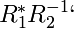
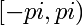
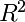
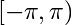

PyGeometry API¶
Usage notes¶
No fancy OO-overdose here. Geometric objects (rotation matrices, poses, etc.) are represented using vanilla Numpy array: there’s no class Rotation, Pose, etc. If you don’t think this is a good idea, your mind has been spoiled by C++ or Java classes taught by clueless professors.
The main procedures are implemented as simple functions accepting and returning numpy arrays. Manifolds are implemented using classes that wrap the simple functions.
Manifolds objects “know” how to compute distances, interpolate, etc. This makes sense: for example, the interpolation between the identity and a rotation matrix depends on whether you are considering them as elements of GL(n) or SO(n).
Most functions declare contracts among parameters and return values using the PyContracts library. This is slightly paranoid. You can disable all those checks using contracts.disable_all().
The naming conventions for conversion operations is:
x = <X>_from_<Y>(y)
For example:
R = rotation_from_axis_angle(axis, angle) axis, angle = axis_angle_from_rotation(R) R = rotation_from_quaternion(q)
S(n) - Hyperspheres¶
- geometry.geodesic_distance_on_sphere(s1, s2)¶
Returns the geodesic distance between two points on the sphere.
Parameters: - s2 (array[K],unit_length) –
- s1 (array[K],unit_length) –
Return type: float,>=0,<=pi
- geometry.distribution_radius(S)¶
Returns the radius of the given directions distribution.
The radius is defined as the minimum r such that there exists a point s in S such that all distances are within r from s.

Parameters: S (directions) – Return type: float,>=0,<=pi
- geometry.sorted_directions(S, num_around=15)¶
Rearranges the directions in S in a better order for visualization.
In 2D, sorts the directions using their angle.
In 3D, it tries to do a pleasant elicoidal arrangement with num_around spires.
Parameters: S (array[KxN],(K=2|K=3),directions) – Return type: array[KxN],directions
Random sampling¶
- geometry.random_direction(ndim=3)¶
Generates a random direction in
 .Currently only implemented for 2D and 3D.
.Currently only implemented for 2D and 3D.Parameters: ndim ((2|3),K) – Return type: array[K],unit_length
- geometry.random_directions(N, ndim=3)¶
Returns a set of random directions.
Parameters: - ndim (2|3) –
- N (int,>0,N) –
Return type: array[3xN]
- geometry.any_distant_direction(s)¶
Returns a direction distant from both s and -s.
Parameters: s (direction) – Return type: direction
- geometry.any_orthogonal_direction(s)¶
Returns any axis orthogonal to s (not necessarily random).
Parameters: s (direction) – Return type: direction
- geometry.random_orthogonal_direction(s)¶
Returns a random axis orthogonal to s.
Parameters: s (array[K],unit_length) – Return type: array[K],unit_length
- geometry.random_directions_bounded(ndim, radius, num_points, center=None)¶
- Returns a random distribution of points in .
within a certain radius from the point center.
The points will be distributed uniformly in that area of the sphere. If center is not passed, it will be a random direction.
Parameters: - ndim ((2|3),K) –
- num_points (int,>0) –
- radius (number,>0,<=pi) –
- center (None|array[K],unit_length) –
Return type: array[KxN],directions
- Returns a random distribution of points in
SO(n) - Rotations and quaternions¶
- geometry.hat_map(v)¶
Maps a vector to a 3x3 skew symmetric matrix.
Parameters: v (array[3]) – Return type: array[3x3],skew_symmetric
- geometry.map_hat(H)¶
The inverse of hat_map().
Parameters: H (array[3x3],skew_symmetric) – Return type: array[3]
- geometry.rotation_from_quaternion(x)¶
Converts a quaternion to a rotation matrix.
Parameters: x (unit_quaternion) – Return type: rotation_matrix
- geometry.rotation_from_axis_angle(axis, angle)¶
- Computes the rotation matrix from the (axis,angle) representation
- using Rodriguez’s formula.
Parameters: - angle (float) –
- axis (direction) –
Return type: rotation_matrix
- geometry.rotation_from_axis_angle2(axis, angle)¶
Get the rotation from the (axis,angle) representation.
This is an alternative to rotation_from_axis_angle() which goes through the quaternion representation.Parameters: - angle (float) –
- axis (direction) –
Return type: rotation_matrix
- geometry.axis_angle_from_quaternion(q)¶
This is the inverse of quaternion_from_axis_angle().
Parameters: q (unit_quaternion) – Return type: axis_angle_canonical
- geometry.axis_angle_from_rotation(R)¶
Returns the (axis,angle) representation of a given rotation.
There are a couple of symmetries:
- By convention, the angle returned is nonnegative.
- If the angle is 0, any axis will do. In that case, default_axis() will be returned.
Parameters: R (rotation_matrix) – Return type: axis_angle_canonical
- geometry.quaternion_from_rotation(R)¶
Converts a rotation matrix to a quaternion.
This is the robust method mentioned on wikipedia:
<http://en.wikipedia.org/wiki/Quaternions_and_spatial_rotation>
TODO: add the more robust method with 4x4 matrix and eigenvector
Parameters: R (rotation_matrix) – Return type: unit_quaternion
- geometry.quaternion_from_axis_angle(axis, angle)¶
- Computes a quaternion corresponding to the rotation of angle radians
around the given axis.
This is the inverse of axis_angle_from_quaternion().
Parameters: - angle (float) –
- axis (direction) –
Return type: unit_quaternion
- geometry.geodesic_distance_for_rotations(R1, R2)¶
Returns the geodesic distance between two rotation matrices.
It is computed as the angle of the rotation .Parameters: - R1 (rotation_matrix) –
- R2 (rotation_matrix) –
Return type: float,>=0,<=pi
Random sampling¶
- geometry.random_quaternion()¶
Generate a random quaternion.
Uses the algorithm used in Kuffner, ICRA‘04.Return type: unit_quaternion
- geometry.random_rotation(ndim=3)¶
Generate a random rotation matrix.
This is a wrapper around random_quaternion().Parameters: ndim (2|3) – Return type: array[2x2]|rotation_matrix
- geometry.random_orthogonal_transform()¶
Return type: array[3x3],orthogonal
SE(n) - Poses¶
- geometry.pose_from_rotation_translation(R, t)¶
Parameters: - R (array[NxN],orthogonal) –
- t (array[N]) –
Return type: array[MxM],M=N+1
- geometry.rotation_translation_from_pose(pose)¶
Parameters: pose (array[NxN]) – Return type: tuple(array[MxM],array[M]),M=N-1
- geometry.extract_pieces(x)¶
- geometry.combine_pieces(a, b, c, d)¶
Procrustes analysis¶
- geometry.best_orthogonal_transform(X, Y)¶
Finds the best orthogonal transform R between X and Y, such that R X ~= Y.
Parameters: - Y (array[KxN]) –
- X (array[KxN],K>=2,K<N) –
Return type: array[KxK],orthogonal
- geometry.closest_orthogonal_matrix(M)¶
Finds the closest orthogonal matrix to M.
Parameters: M (array[NxN]) – Return type: array[NxN],orthogonal
Misc utils¶
- geometry.default_axis()¶
Returns the axis to use when any will do.
For example, the identity is represented by a rotation of 0 degrees around any axis. If an (axis,angle) representation is requested, the axis will be given by default_axis().Return type: direction
- geometry.default_axis_orthogonal()¶
- Returns an axis orthogonal to the one returned
by default_axis().
Use this when you need a couple of arbitrary orthogonal axes.
Return type: direction
- geometry.safe_arccos(x)¶
Returns the arcosine of x, clipped between -1 and 1.
Use this when you know x is a cosine, but it might be slightly over 1 or below -1 due to numerical errors.
- geometry.normalize_pi(x)¶
Normalizes the entries in x in the interval .
- geometry.normalize_length(s, norm=2)¶
Normalize an array such that it has unit length in the given norm.
Parameters: s (array) –
- geometry.normalize_length_or_zero(s, norm=2)¶
- Normalize an array such that it has unit length in the given norm; if the
- norm is close to zero, the zero vector is returned.
Parameters: s (array) –
- geometry.assert_allclose(actual, desired, rtol=9.9999999999999995e-08, atol=0, err_msg='', verbose=True)¶
Backporting assert_allclose from 1.5 to 1.4
These are some of the contracts defined using PyContracts.
- geometry.assert_orthogonal(s, v)¶
Checks that two vectors are orthogonal.
Parameters: - s (array[K],K>=2) –
- v (array[K]) –
- geometry.unit_length(callable)¶
- geometry.finite(callable)¶
- geometry.orthogonal(callable)¶
- geometry.rotation_matrix(callable)¶
- geometry.skew_symmetric(callable)¶
- geometry.directions(callable)¶
Manifolds and Matrix Lie Groups interface¶
- class geometry.DifferentiableManifold¶
This is the base class for differentiable manifolds.
Methods
- belongs(x, msg=None)¶
Checks that a point belongs to this manifold.
This function wraps some checks around belongs_(), which is implemented by the subclasses.
- belongs_(a)¶
Checks that a point belongs to this manifold.
- belongs_ts(base, vx)¶
Checks that a vector vx belongs to the tangent space at the given point base.
- distance(a, b)¶
Computes the geodesic distance between two points.
This function wraps some checks around distance_(), which is implemented by the subclasses.
- distance_(a, b)¶
Computes the geodesic distance between two points.
- expmap(base, v)¶
Computes the exponential map from base for the velocity vector v.
This function wraps some checks around expmap_(), which is implemented by the subclasses.
- expmap_(a, v)¶
Computes the exponential map from a for the velocity vector v.
- friendly(a)¶
Returns a friendly description string for a point on the manifold.
- geodesic(a, b, t)¶
Returns the point interpolated along the geodesic.
Parameters: t (>=0,<=1) –
- interesting_points()¶
Returns a list of “interesting points” on this manifold that should be used for testing various properties.
- logmap(base, p)¶
Computes the logarithmic map from base point base to target b.
This function wraps some checks around logmap_(), which is implemented by the subclasses.
- logmap_(a, b)¶
Computes the logarithmic map from base point a to target b.
- project_ts(base, v)¶
Projects a vector v_ambient in the ambient space to the tangent space at point base.
This function wraps some checks around project_ts_(), which is implemented by the subclasses.
- project_ts_(base, v_ambient)¶
Projects a vector v_ambient in the ambient space to the tangent space at point base.
- class geometry.Group¶
Methods
- inverse(g)¶
Implements the group inversion.
- multiply(g, h)¶
Implements the group operation.
- unity()¶
Returns the group unity.
- class geometry.MatrixLieAlgebra(n)¶
This is the base class for Matrix Lie Algebra.
It is understood that it is composed by square matrices.
The only function that has to be implemented is the project() function that projects a square matrix onto the algebra. This function is used both for checking that a vector is in the algebra (see belongs()) and to mitigate the numerical errors.
You probably also want to implement norm() if the default is not what you want.
Methods
- belongs(v)¶
Checks that a vector belongs to this algebra.
- norm(v)¶
Return the norm of a vector in the algebra. This is used in MatrixLieGroup to measure distances between points in the Lie group.
- project(v)¶
Projects a matrix onto this Lie Algebra.
- class geometry.MatrixLieGroup(n, algebra)¶
This is the base class for matrix Lie groups.
Subclasses should provide a MatrixLieAlgebra object. Given the Lie algebra, we can compute everything. However, subclasses can choose to overload some functions if they know a more numerically stable implementation.
Methods
- distance_(a, b)¶
Computes the distance between two points.
In the case of Lie groups, this is done by translating everything to the origin, computing the logmap, and using the norm defined in the Lie Algebra object.
- expmap_(base, vel)¶
This is the inverse of logmap_().
In the case of Lie groups, this is implemented using the usual matrix exponential.
Here the MatrixLieAlgebra.project() function is used to mitigate numerical errors.
- inverse(g)¶
- logmap_(base, target)¶
Returns the direction from base to target.
In the case of Lie groups, this is implemented by using the usual matrix logarithm at the origin.
Here the MatrixLieAlgebra.project() function is used to mitigate numerical errors.
- multiply(g, h)¶
- project_ts_(base, x)¶
Projects the vector x to the tangent space at point base.
In the case of Lie Groups, we do this by translating the vector to the origin, projecting it to the Lie Algebra, and then translating it back.
- unity()¶
Included generic manifolds¶
- class geometry.Sphere(order)¶
These are hyperspheres of unit radius.
Methods
- belongs_(x)¶
- distance_(a, b)¶
- expmap_(base, vel)¶
- friendly(x)¶
- interesting_points()¶
- logmap_(base, target)¶
- norm_rtol = 1.0000000000000001e-05¶
- project_ts_(base, x)¶
- sample_uniform()¶
- class geometry.Euclidean(dimension)¶
This is the usual Euclidean space of finite dimension; this is mostly used for debugging.
There is no proper Haar measure; as an arbitrary choice, the sample_uniform() returns a sample from a Gaussian distribution centered at 0.
Methods
- belongs_(x)¶
Parameters: x (array) –
- distance_(a, b)¶
- expmap_(base, vel)¶
- interesting_points()¶
- logmap_(base, target)¶
- project_ts_(base, x)¶
- sample_uniform()¶
- class geometry.SO(n)¶
This is the Special Orthogonal group SO(n) describing rotations of Euclidean space; implemented for n=2,3.
Methods
- belongs_(x)¶
- friendly(x)¶
- sample_uniform()¶
- class geometry.SE(n, alpha=1)¶
This is the Special Euclidean group SE(n) describing roto-translations of Euclidean space. Implemented only for n=2,3.
Note that you have to supply a coefficient alpha that weights rotation and translation when defining distances.
Methods
- belongs_(x)¶
- friendly(x)¶
- sample_uniform()¶
Shortcuts¶
- geometry.S1¶
Unit circle as a subset of .
- geometry.S2¶
Unit sphere.
- geometry.SO2¶
Planar rotations.
- geometry.SO3¶
Rotations in 3D.
- geometry.so2¶
Lie algebra for planar rotations.
- geometry.so3¶
Lie algebra for 3D rotations.
- geometry.SE2¶
Poses in 2D.
- geometry.SE3¶
Poses in 3D.
- geometry.se2¶
Lie algebra for SE(2).
- geometry.se3¶
Lie algebra for SE(3).
- geometry.T1¶
One dimensional torus, mapped onto .
Note that this is equivalent to the unit circle, but the representation is different: T1 uses “angles” while S2 uses unit vectors in .
- geometry.T2¶
2D torus.
- geometry.T3¶
3D torus.